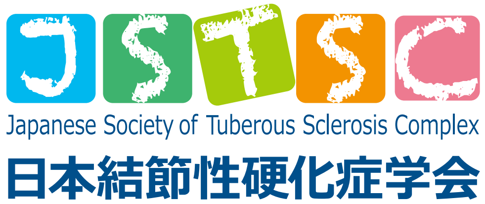
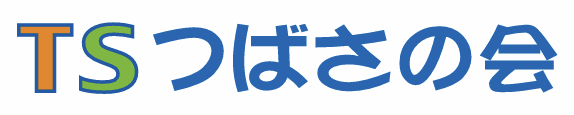

現地参加の方
- 現地参加の申し込みは終了しました（10月31日締切）。
- 抄録集は学会当日に会場でお渡しします。


TSCつばさの会も同時開催されます。
ご注意：現地参加の新規申し込みは終了しました。参加区分の変更については、運営事務局へお問い合わせください。
領収書は参加登録後、参加証明書は学会終了後に、それぞれメールでお送りします。
※ いずれもPeatix（外部サイト）へ移動します。
第14回日本結節性硬化症学会学術総会 運営事務局
jstsc14-office@ncchd.go.jp